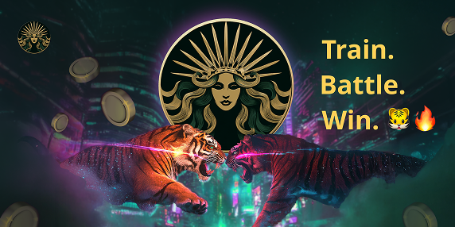
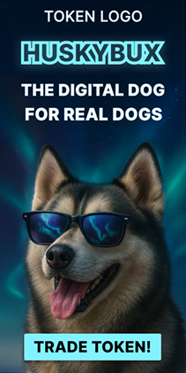
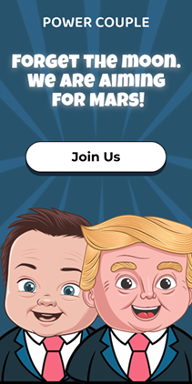
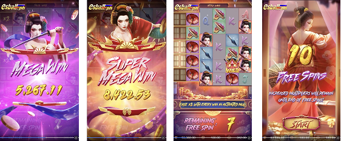
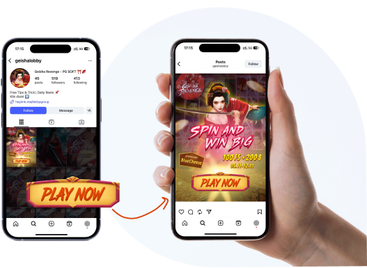
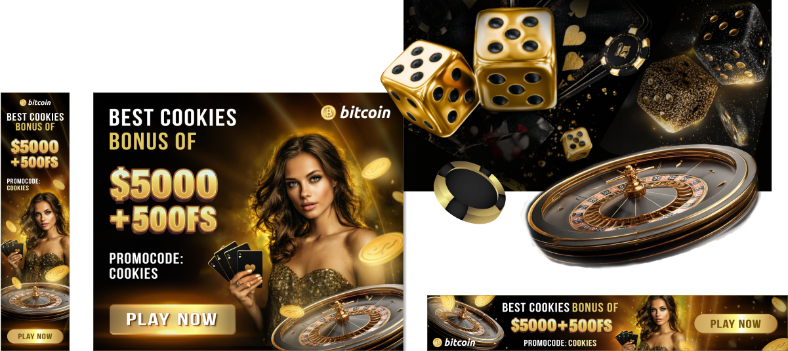
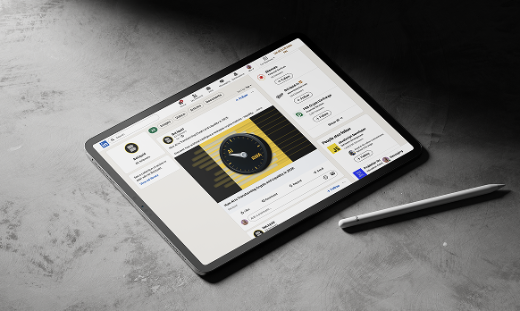
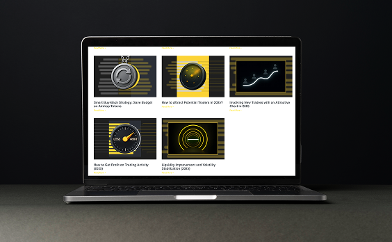
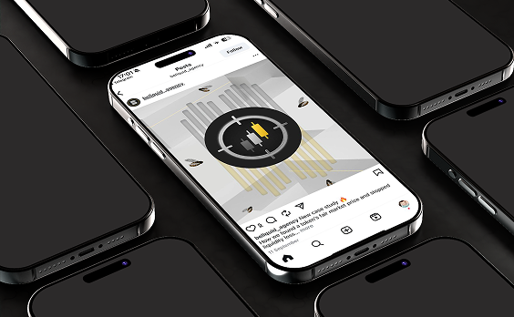

During my work at a marketing agency, I designed over 200+ banners for articles, social media, and
promotional campaigns in the crypto and Web3 industry. Below is a small selection of adapted examples that
showcase my design approach, typography, and visual style while respecting NDA limitations.

A series of banners created for publications on crypto and fintech platforms.
The main focus was to deliver clear, visually engaging designs that reflect the article’s topic and
maintain brand consistency.



Banner ads designed for
advertising campaigns. The goal was to highlight the key message, create a clear visual
hierarchy, and include an effective call to action (CTA).
A collection of marketing creatives for online games and casino platforms, including social media
banners, adaptive display ads, and performance-driven visual content.
Designs created for
i-gaming brands with a focus on engagement, clarity, and platform-specific adaptation.

screenshots from the game


High-performance banners and
creatives for casino brands, optimized for advertising and organic publishing on various platforms.
Adaptations for social media platforms,
considering format-specific requirements and user behavior. Shown here in
mock-up format to demonstrate real-life application.

Most of my work in the crypto
space is under NDA, so the examples shown are adapted. However, they reflect my ability to
work with composition, typography, and color to create designs tailored for marketing and growth
campaigns.

